The Gemini Desktop application for Windows users provides screen capture and stop-watch style time recording. The application will minimize to the Windows System Tray for quick access.
Download the latest Gemini release and unzip.
Run the Gemini Desktop installer located in the Extras folder.
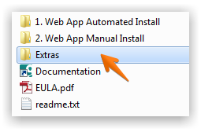
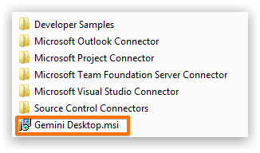
Use the Gemini Desktop shortcut that should have been placed on you Windows Desktop.
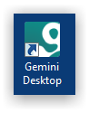
Click the login button to and provide your Gemini credentials when prompted.
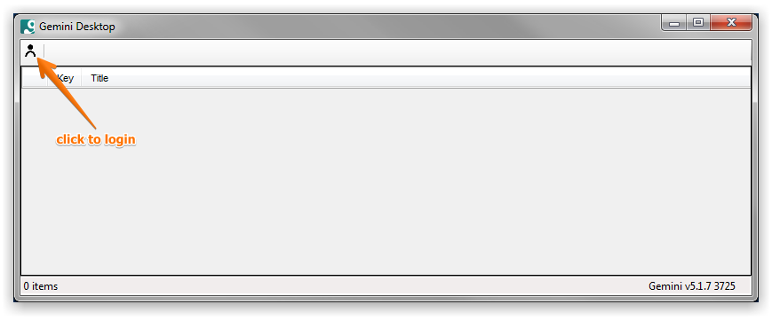
Gemini Desktop displays items in a grid where you click to select an item. Once selected you can attach a screenshot, add a comment or use stop-watch time recording.
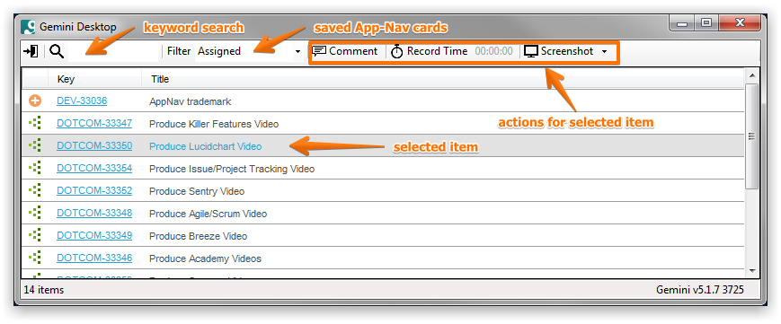
Select an item and click the Comment button.
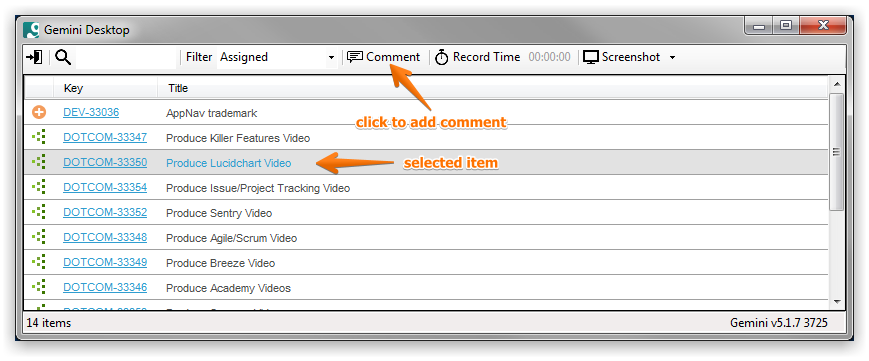
Type your comment and click Save.
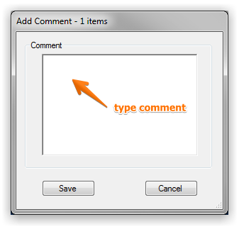
Select an item and select a screenshot option - screen, window or region.
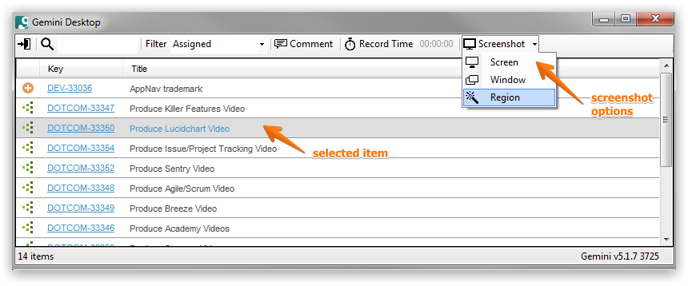
Once captured, use the image editor to annotate or hightlight the screenshot.
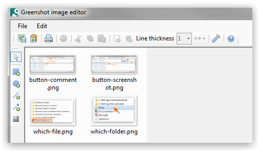
Use the menu to save the screenshot back to the selected Gemini item.
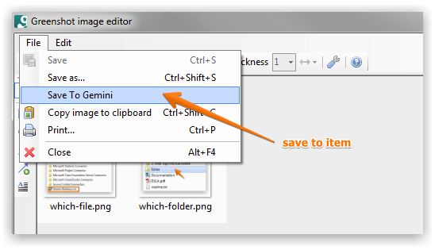
Select one or more items to start time recording.
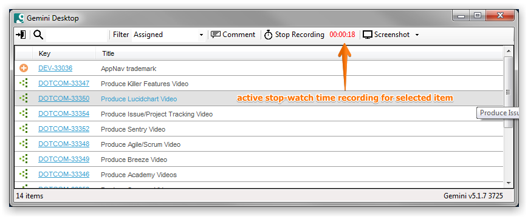
Note that you can select multiple items in which case the time can be split equally between the selected items, or you can assign the time yourself.
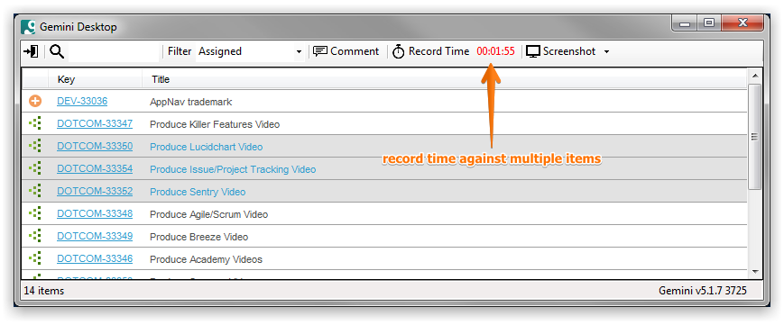
You can provide a comment when logging time and decide how to split the recorded time where you have multiple items.
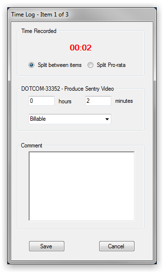